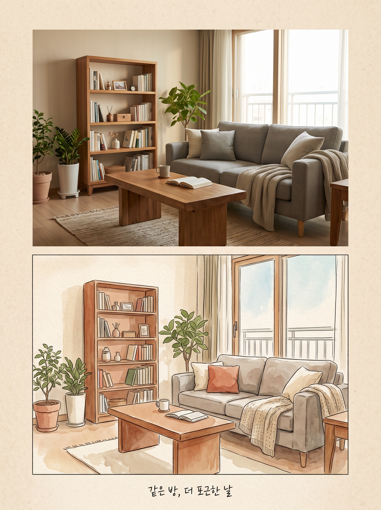

스레드에 올린 이미지를 실제로 만든 프롬프트 원문이에요. 그대로 붙여 넣으면 비슷한 결과가 나와요.

Vertical 3:4 before-and-after poster with two stacked panels joined at a clean horizontal seam, on a beige paper-textured background with a generous margin. TOP PANEL: a realistic photograph of a cozy Korean apartment living room with a fabric sofa, a low wooden coffee table, potted plants, a tall bookshelf and a large window, warm natural daylight, no people. BOTTOM PANEL: the exact same room with the exact same composition, camera angle and furniture positions, redrawn as a delicate watercolor illustration with soft brushstrokes, fine ink outlines and muted earthy colors on textured cream paper. In the bottom margin add one small handwritten-style caption reading exactly "같은 방, 더 포근한 날", centered, crisp and correctly spelled. No other text, no logos, no watermarks. Nostalgic editorial mood, high detail, advertising-quality finish.대괄호 [ ] 칸만 내 것으로 바꾸고 나머지는 그대로 두세요.
Vertical 3:4 before-and-after poster with two stacked panels joined at a clean horizontal seam, on a beige paper-textured background with a generous margin. TOP PANEL: a realistic photograph of a cozy Korean apartment living room with a [소파 종류] sofa, a low wooden coffee table, potted plants, a tall bookshelf and a large window, warm natural daylight, no people. BOTTOM PANEL: the exact same room with the exact same composition, camera angle and furniture positions, redrawn as a delicate [그림 스타일] illustration with soft brushstrokes, fine ink outlines and muted [색감] colors on textured cream paper. In the bottom margin add one small handwritten-style caption reading exactly "[캡션 문구]", centered, crisp and correctly spelled. No other text, no logos, no watermarks. Nostalgic editorial mood, high detail, advertising-quality finish.| 증상 | 원인 | 이렇게 고친다 |
|---|---|---|
| 손가락 개수·모양이 이상해요 | 손은 겹치고 가려지는 부분이 많아 AI가 자주 틀려요 | 손이 작게 나오거나 가려지는 구도로 바꾸고, 그래도 이상하면 손 부분만 다시 생성(부분 수정)해요 |
| 그림 속 글자가 깨지거나 엉뚱한 글자가 생겨요 | 이미지 AI는 글자를 그림으로 그려서 철자가 틀리기 쉬워요 | 프롬프트에 "no text"를 넣어 글자 없이 뽑고, 글자는 캔바·포토샵 같은 편집 도구에서 따로 얹어요 |
| 실제 브랜드 로고가 들어가거나 비슷하게 나와요 | 학습한 유명 제품 모습을 그대로 따라 그려요 | 브랜드 이름을 빼고 "unbranded, no logo"를 넣어요. 상표가 보이는 결과물은 광고에 쓰지 않아요 |
| 원하는 비율(세로·가로)로 안 나오거나 잘려요 | 비율을 따로 정하지 않으면 도구 기본값(주로 정사각형)으로 나와요 | 도구의 비율 설정(예: 4:5, 9:16)을 먼저 고르고, 프롬프트에도 "vertical 4:5 composition"처럼 적어요 |
| 피부·제품이 플라스틱처럼 매끈하고 가짜 같아요 | 보정이 과한 사진을 흉내 내 질감이 사라져요 | "natural texture, realistic photo"를 넣고 "glossy, perfect skin" 같은 말은 빼요 |
해보다 막히면 스레드 댓글로 물어봐 주세요.